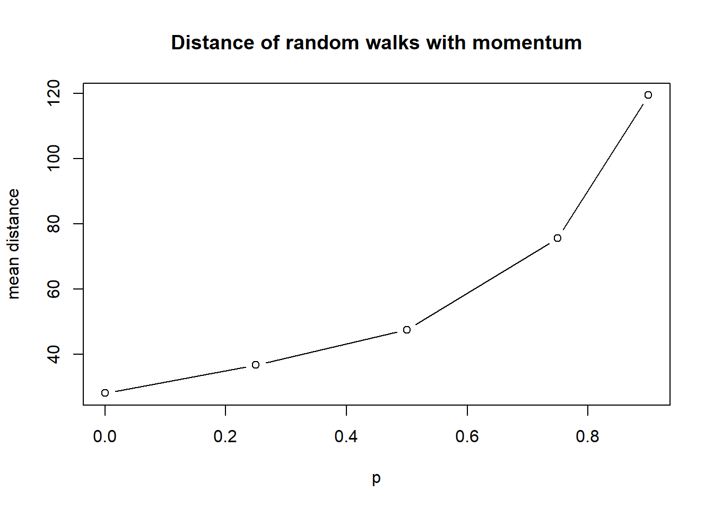
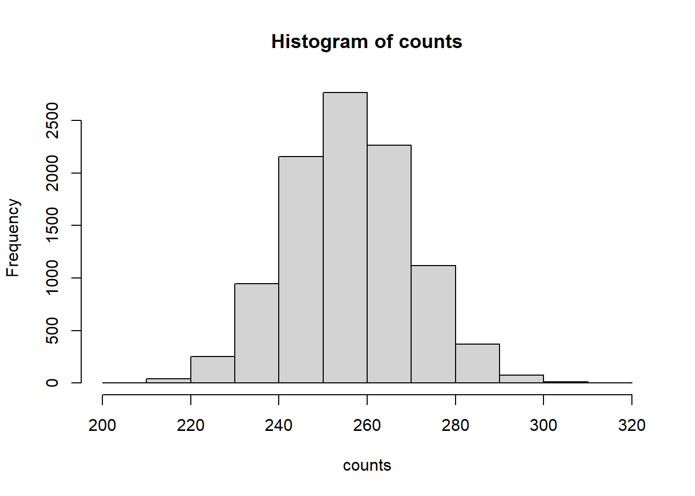
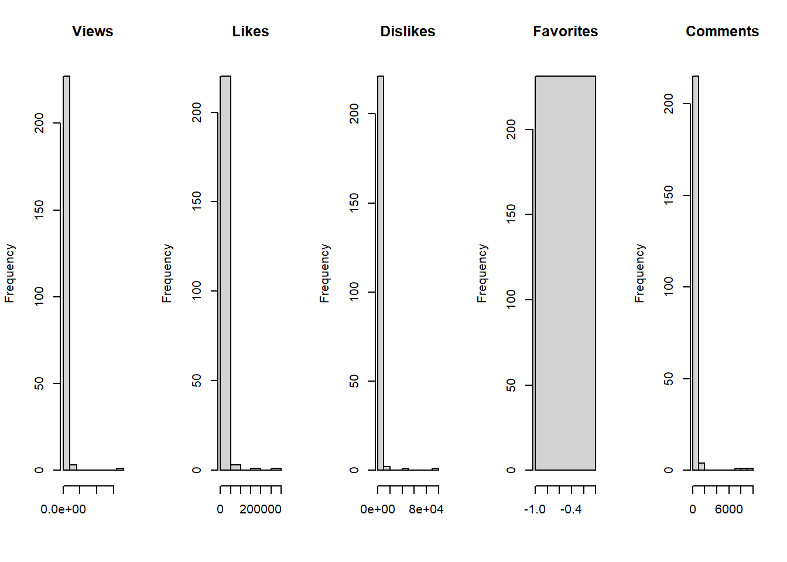
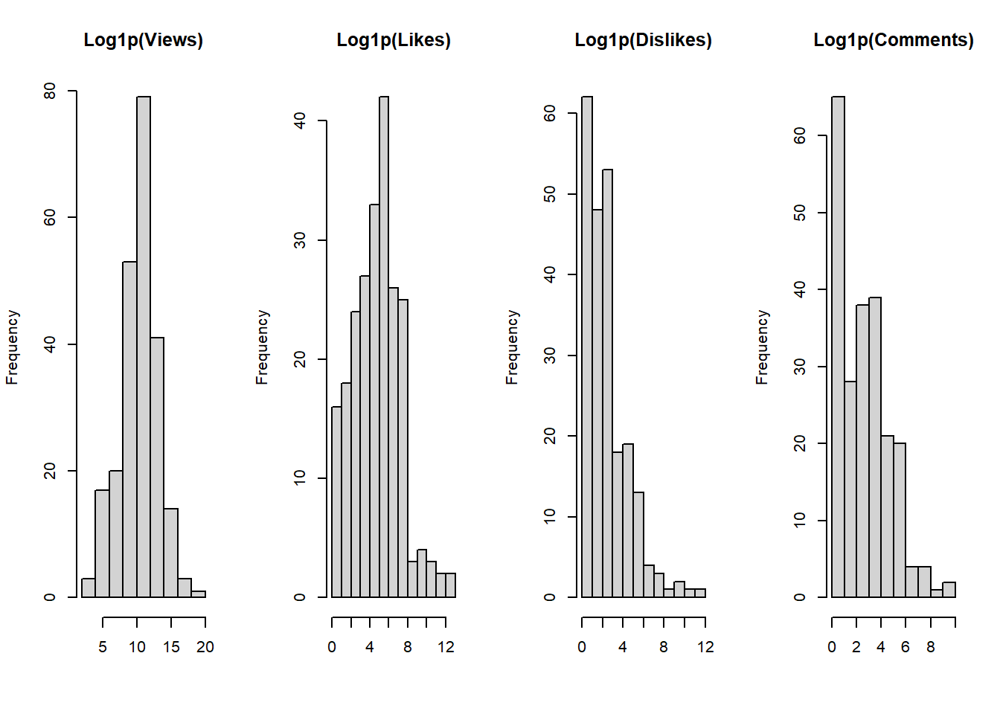

#' A common helper function which check if
#' * n is positive integer, and
#' * p in [0, 1]
#'
#' @param f the implementation of momentum walk
#' @return implementation with parameter guarded
momentum_walk_santilize <- function (f) {
function (n, p) {
if (!is.numeric(n) || (n < 1) || as.integer(n) != n) {
stop("n must be a positive integer")
}
if (!is.numeric(p) || p < 0 || p > 1) {
stop("p must be a probability between 0 and 1")
}
f(n, p)
}
}Homework 2
Problem 1: Random Walk with Momentum
a. Simulation function
Before moving on, let’s create a function that helps sanitize the input of momentum walk.
We need to verify that \(n\) is positive integer, and \(p\) is a probability in \([0, 1]\).
Then, let’s focus on the first implementation.
The first implementation using vectorized apporach. 1. We use runif > p to check if we need a new direction. 2. Calculate the accumulated sum, so we know how many directions we need to decide, and in each step which direction we need to use. 3. Use \(\mathrm{i}^{d}\) to get 4 directions, and sum these complex numbers to get the destination. 4. Convert the destination to two numbers
#' Consider a particle moving in two dimensions. The particle starts at
#' $$ (x,y)=(0,0) $$
#' At each step, the particle moves one unit in one of four directions:
#' right:(+1,0), left:(-1,0), up:(0,+1), down:(0,−1)
#' For the first step, choose one of the four directions with equal
#' probability (which means, 1/4).
#' For every subsequent steps, With probability p, the particle moves
#' in the same direction as the previous step.
#' With probability 1−p, it chooses one of the four directions at
#' random, with equal probability.
#'
#' @param n number of steps
#' @param p probability of choosing the same direction as the previous step
#' not that for probability 1-p, there are still chances of choosing
#' the same direction as the previous step
#' @return two integers representing the destination of moving
momentum_walk <- momentum_walk_santilize(function (n, p) {
has_turn <- c(TRUE, (runif(n - 1) > p))
turn_count <- cumsum(has_turn)
total_turn <- turn_count[length(turn_count)]
directions <- sample(1:4, total_turn, replace = TRUE)[turn_count]
destination = sum(1i ** directions)
c(Re(destination), Im(destination))
})b. Implement the simulation
Here is the loop approach.
- Repeat until no remaining steps needed, starting from
nsteps - Since the continuous steps in single direction follow Geometric(1-p), we get the number of steps in this direction directlty using
rgeom. - Then, we sum all the steps to get destination
#' Same as `momentum_walk` but with loops
#'
#' @param n number of steps
#' @param p probability of keeping previous direction
#' @return the destination
momentum_walk1 <- momentum_walk_santilize(function(n, p) {
if (p == 1) {
direction <- sample(1:4, size=1)
destination <- 1i ** direction * n
return(c(Re(destination), Im(destination)))
}
steps_remain <- n
destination <- 0
while (steps_remain > 0) {
steps <- min(steps_remain, rgeom(1, 1 - p) + 1)
direction <- sample(1:4, size=1)
steps_remain <- steps_remain - steps
destination <- destination + 1i ** direction * steps
}
c(Re(destination), Im(destination))
})Here is the apply approach.
- Chose a direction initially.
- Repeat
ntimes, each time choosing a new direction with probability \(1-p\), or keep the previous direction otherwise. - Get a list of each steps, and then sum them up get destination.
#' Same as `momentum_walk` but with applies
#'
#' @param n the number of steps
#' @param p the probability of keeping previous direction
#' @return the destination
momentum_walk2 <- momentum_walk_santilize(function (n, p) {
direction <- sample(1:4, size=1)
destination <- sum(sapply(1:n, function (step) {
direction <<- if (runif(1) > p) sample(1:4, size=1) else direction
1i ** direction
}))
c(Re(destination), Im(destination))
})We can test our code
print(momentum_walk(10, 0.6))[1] 1 -7print(momentum_walk(1000, 0.6))[1] 54 28print(momentum_walk1(10, 0.6))[1] -5 -1print(momentum_walk1(1000, 0.6))[1] -44 6print(momentum_walk2(10, 0.6))[1] 0 0print(momentum_walk2(1000, 0.6))[1] 28 -28c. Reproducibility
In order to ensure the reproducibility, we need to config random seed in our code.
set.seed(42)
print(momentum_walk(10, 0.6))[1] 5 1set.seed(42)
print(momentum_walk(10, 0.6))[1] 5 1set.seed(42)
print(momentum_walk1(10, 0.6))[1] -1 -3set.seed(42)
print(momentum_walk1(10, 0.6))[1] -1 -3set.seed(42)
print(momentum_walk2(10, 0.6))[1] -2 -2set.seed(42)
print(momentum_walk2(10, 0.6))[1] -2 -2set.seed(42)
print(momentum_walk(1000, 0.6))[1] -28 -12set.seed(42)
print(momentum_walk(1000, 0.6))[1] -28 -12set.seed(42)
print(momentum_walk1(1000, 0.6))[1] -77 67set.seed(42)
print(momentum_walk1(1000, 0.6))[1] -77 67set.seed(42)
print(momentum_walk2(1000, 0.6))[1] -76 -44set.seed(42)
print(momentum_walk2(1000, 0.6))[1] -76 -44Above execution shows that, when seed is given, the output is reproducible.
d. Does momentum matter?
as.data.frame(t(sapply(c(0, 0.5, 0.9), function (p) {
set.seed(42)
destination = momentum_walk(1000, p)
c(p = p, destination = destination, distance = sqrt(sum(destination ^ 2)))
}))) p destination1 destination2 distance
1 0.0 -11 -13 17.02939
2 0.5 -57 75 94.20191
3 0.9 -14 -4 14.56022From these three simulations, there is no clear pattern that the distance increases as \(p\) increases. Although higher momentum should generally lead to a larger distance, a single simulation for each value of \(p\) is not enough to show this pattern clearly because of randomness.
e. Monte Carlo simulation
So we try to simulate 1,000 times. And see if we can get a better understanding of the distance.
simulation_result <- as.data.frame(t(sapply(c(0, 0.25, 0.5, 0.75, 0.9), function (p) {
set.seed(42)
mean_distance = mean(sapply(1:1000, function (i) sqrt(sum(momentum_walk(1000, p) ^ 2))))
c(p = p, mean_distance = mean_distance)
})))
simulation_result p mean_distance
1 0.00 28.17014
2 0.25 36.81106
3 0.50 47.61071
4 0.75 75.59894
5 0.90 119.50938plot(mean_distance ~ p, data = simulation_result, type = 'b', xlab = 'p', ylab = 'mean distance', main = 'Distance of random walks with momentum')
After 1,000 simulations, the pattern is clearer. The mean final distance increases as \(p\) increases.
f. Compare computational performance
We run benchmarks with n = 1000, p = 0.6, and n = 100000, p = 0.6 using all 3 functions.
library(microbenchmark)benchmark1k <- microbenchmark(
momentum_walk = momentum_walk(1000, 0.6),
momentum_walk1 = momentum_walk1(1000, 0.6),
momentum_walk2 = momentum_walk2(1000, 0.6),
times = 100
)
summary(benchmark1k) expr min lq mean median uq max neval
1 momentum_walk 31.1 33.85 45.681 36.95 40.70 564.0 100
2 momentum_walk1 985.3 1091.00 1215.750 1146.15 1200.25 3788.5 100
3 momentum_walk2 1672.9 1731.05 1848.390 1770.15 1855.50 2658.2 100benchmark100k <- microbenchmark(
momentum_walk = momentum_walk(100000, 0.6),
momentum_walk1 = momentum_walk1(100000, 0.6),
momentum_walk2 = momentum_walk2(100000, 0.6),
times = 100
)
summary(benchmark100k) expr min lq mean median uq max neval
1 momentum_walk 2.5909 2.7814 2.97047 2.9189 3.12855 3.7161 100
2 momentum_walk1 114.2380 127.4694 135.74399 134.2255 141.75275 186.1542 100
3 momentum_walk2 182.6362 201.0401 213.07813 208.9353 220.75415 276.9713 100Since the code is \(\mathcal{O}(n)\) time complexity. It wouldn’t be amazing that whin larger \(n\), the code consumes more time.
The vectorlized code runs fastest. That’s because the vectorized version take the advantage of using underlying C code to boost the performance.
And the later 2 versions cannot be vectorlized, and is ~40x slower.
However, version 1 is still faster, that due to we optimized the code using rgeom to move multiple steps at once.
The performance difference becomes larger as \(n\) increases.
Problem 2: Monte Carlo Simulation of Campus Bus Arrivals
#' Simulate total number of passengers who board the bus during one day, under the following assumptions:
#' * 6 AM to 8 AM (3 hours): The number of passengers per hour follows a Poisson distribution with mean 4.
#' * 9 AM (1 hour): The number of passengers follows a Normal distribution with mean 45 and variance 16.
#' * 10 AM to 3 PM (6 hours): The number of passengers per hour follows a Poisson distribution with mean 15.
#' * 4 PM (1 hour): The number of passengers follows a Normal distribution with mean 55 and variance 25.
#' * 5 PM to 10 PM (6 hours): The number of passengers per hour follows a Poisson distribution with mean 9.
passengers_count <- function () {
sum(c(
rpois(3, 4),
rnorm(1, 45, 4),
rpois(6, 15),
rnorm(1, 55, 5),
rpois(6, 9)
))
}set.seed(42)
counts <- replicate(10000, passengers_count())hist(counts, plot=TRUE)
summary(counts) Min. 1st Qu. Median Mean 3rd Qu. Max.
208.0 246.5 255.8 256.0 265.3 314.7 mean(counts)[1] 256.0385sd(counts)[1] 13.98875z <- (mean(counts) - 256) / (sd(counts) / sqrt(10000))
p <- 2 * (1 - pnorm(abs(z)))
p[1] 0.7829177With math calculation, we may conclude the expected value of number of passengers is \(256\).
And under the simulation above, the mean value is \(256.04\) with standard deviation \(13.99\).
The simulation meets the math calculation as expected.
Problem 3: Linear Regression
We first download the file once, so we do not need to download it every time we run the code.
youtube.url = "https://raw.githubusercontent.com/rfordatascience/tidytuesday/master/data/2021/2021-03-02/youtube.csv"
if (!dir.exists('p3')) dir.create('p3')
if (!file.exists('p3/youtube.csv')) download.file(youtube.url, 'p3/youtube.csv')youtube <- read.csv('p3/youtube.csv')a. Data preparation and de-identification
Then, we de-indentify the data by removing variables such as the brand, title, URLs, YouTube channel, and publication information.
youtube$brand <- NULL
youtube$superbowl_ads_dot_com_url <- NULL
youtube$youtube_url <- NULL
youtube$kind <- NULL
youtube$id <- NULL
youtube$etag <- NULL
youtube$title <- NULL
youtube$description <- NULL
youtube$thumbnail <- NULL
youtube$channel_title <- NULL
youtube$published_at <- NULLdim(youtube)[1] 247 14head(youtube) year funny show_product_quickly patriotic celebrity danger animals use_sex
1 2018 FALSE FALSE FALSE FALSE FALSE FALSE FALSE
2 2020 TRUE TRUE FALSE TRUE TRUE FALSE FALSE
3 2006 TRUE FALSE FALSE FALSE TRUE TRUE FALSE
4 2018 FALSE TRUE FALSE FALSE FALSE FALSE FALSE
5 2003 TRUE TRUE FALSE FALSE TRUE TRUE TRUE
6 2020 TRUE TRUE FALSE TRUE TRUE TRUE FALSE
view_count like_count dislike_count favorite_count comment_count category_id
1 173929 1233 38 0 NA 1
2 47752 485 14 0 14 27
3 142310 129 15 0 9 17
4 198 2 0 0 0 22
5 13741 20 3 0 2 24
6 23636 115 11 0 13 1b. Exploring potential outcomes
summary(youtube[, c("view_count", "like_count", "dislike_count", "favorite_count", "comment_count")]) view_count like_count dislike_count favorite_count
Min. : 10 Min. : 0 Min. : 0.0 Min. :0
1st Qu.: 6431 1st Qu.: 19 1st Qu.: 1.0 1st Qu.:0
Median : 41379 Median : 130 Median : 7.0 Median :0
Mean : 1407556 Mean : 4146 Mean : 833.5 Mean :0
3rd Qu.: 170016 3rd Qu.: 527 3rd Qu.: 24.0 3rd Qu.:0
Max. :176373378 Max. :275362 Max. :92990.0 Max. :0
NA's :16 NA's :22 NA's :22 NA's :16
comment_count
Min. : 0.00
1st Qu.: 1.00
Median : 10.00
Mean : 188.64
3rd Qu.: 50.75
Max. :9190.00
NA's :25 par(mfrow = c(1, 5))
hist(youtube$view_count, main = "Views", xlab = "")
hist(youtube$like_count, main = "Likes", xlab = "")
hist(youtube$dislike_count, main = "Dislikes", xlab = "")
hist(youtube$favorite_count, main = "Favorites", xlab = "")
hist(youtube$comment_count, main = "Comments", xlab = "")
par(mfrow = c(1, 1))Since all favorite_count are 0. This column is not suitable for further analysis.
For all other columns, they are heavily right skewed. And take log1p before analysis would be a better idea.
par(mfrow = c(1, 4))
hist(log1p(youtube$view_count), main = "Log1p(Views)", xlab = "")
hist(log1p(youtube$like_count), main = "Log1p(Likes)", xlab = "")
hist(log1p(youtube$dislike_count), main = "Log1p(Dislikes)", xlab = "")
hist(log1p(youtube$comment_count), main = "Log1p(Comments)", xlab = "")
par(mfrow = c(1, 1))After transforming using log1p, the data have a better shape then. And we will use the transformed data in following regressions.
c. Fitting linear regression models
outcomes <- c("view_count", "like_count", "dislike_count", "comment_count")
predictors <- c("funny", "show_product_quickly", "patriotic", "celebrity", "danger", "animals", "use_sex")outcome <- outcomes[1]
predictor <- predictors[1]
lm_results <- do.call(rbind, lapply(outcomes, function (outcome) {
data.frame(t(sapply(predictors, function (predictor) {
model <- lm(as.formula(paste0("log1p(", outcome, ") ~ as.numeric(", predictor, ") + year")), data=youtube)
c(outcome=outcome, predictor=predictor, coefficients=summary(model)$coefficients[2, 1], p.value=summary(model)$coefficients[2, 4])
})))
}))
rownames(lm_results) <- 1:nrow(lm_results)
lm_results$coefficients <- as.numeric(as.character(lm_results$coefficients))
lm_results$p.value <- as.numeric(as.character(lm_results$p.value))
lm_results outcome predictor coefficients p.value
1 view_count funny 0.52984356 0.20510610
2 view_count show_product_quickly 0.20898031 0.60072225
3 view_count patriotic 0.13692497 0.78391866
4 view_count celebrity -0.01898556 0.96288885
5 view_count danger 0.66678076 0.09406479
6 view_count animals -0.17326980 0.64669142
7 view_count use_sex -0.29629543 0.49051595
8 like_count funny 0.36019066 0.34005646
9 like_count show_product_quickly 0.16825538 0.64047730
10 like_count patriotic 0.49311233 0.28968290
11 like_count celebrity 0.26297830 0.47787826
12 like_count danger 0.62526219 0.08031647
13 like_count animals 0.02459257 0.94282914
14 like_count use_sex -0.32497453 0.40008928
15 dislike_count funny 0.04148774 0.89580597
16 dislike_count show_product_quickly 0.24290875 0.42097425
17 dislike_count patriotic 0.66965405 0.08563747
18 dislike_count celebrity -0.28325315 0.36162721
19 dislike_count danger 0.18514931 0.53794989
20 dislike_count animals -0.07378053 0.79742453
21 dislike_count use_sex -0.38888066 0.22927926
22 comment_count funny 0.04746590 0.87934573
23 comment_count show_product_quickly 0.34602814 0.24685774
24 comment_count patriotic 0.51478460 0.16854269
25 comment_count celebrity 0.22806291 0.45558834
26 comment_count danger 0.10642262 0.72095533
27 comment_count animals -0.19176266 0.49906680
28 comment_count use_sex -0.34939714 0.27353634lm_results[lm_results$p.value < 0.05, ][1] outcome predictor coefficients p.value
<0 rows> (or 0-length row.names)at the \(\alpha=0.05\) significance level, there are no pairs of predictors and outcomes that are statistically significantly associated with each other.
view_count_results <- lm_results[lm_results$outcome == 'view_count', ]
view_count_results[order(view_count_results$coefficients, decreasing = TRUE), ] outcome predictor coefficients p.value
5 view_count danger 0.66678076 0.09406479
1 view_count funny 0.52984356 0.20510610
2 view_count show_product_quickly 0.20898031 0.60072225
3 view_count patriotic 0.13692497 0.78391866
4 view_count celebrity -0.01898556 0.96288885
6 view_count animals -0.17326980 0.64669142
7 view_count use_sex -0.29629543 0.49051595For view_count, danger has the largest positive estimated association with it.
d. Estimating regression coefficients using matrix algebra
We can calculate the regression \[ \mathrm{log1p}(ViewCount) \sim Danger + Year \] using the lm function in R as follow
summary(lm(log1p(view_count) ~ danger + year, data = youtube))
Call:
lm(formula = log1p(view_count) ~ danger + year, data = youtube)
Residuals:
Min 1Q Median 3Q Max
-7.7713 -1.7820 0.3009 1.5991 8.8189
Coefficients:
Estimate Std. Error t value Pr(>|t|)
(Intercept) -31.39149 63.93250 -0.491 0.6239
dangerTRUE 0.66678 0.39658 1.681 0.0941 .
year 0.02066 0.03180 0.650 0.5166
---
Signif. codes: 0 '***' 0.001 '**' 0.01 '*' 0.05 '.' 0.1 ' ' 1
Residual standard error: 2.77 on 228 degrees of freedom
(16 observations deleted due to missingness)
Multiple R-squared: 0.01332, Adjusted R-squared: 0.00466
F-statistic: 1.538 on 2 and 228 DF, p-value: 0.2169And on the other hand. We try to calculate it manually using formula
\[ \hat{\mathbf{\beta}} = \left(\mathbf{X}^\top \mathbf{X}\right)^{-1}\mathbf{X}^\top \mathbf{y} \]
present_data <- na.omit(youtube[, c("view_count", "danger", "year")])
y <- log1p(present_data$view_count)
X <- cbind(
"(Intercept)" = 1,
danger = as.numeric(present_data$danger),
year = present_data$year
)
beta_hat <- solve(t(X) %*% X) %*% t(X) %*% y
beta_hat [,1]
(Intercept) -31.39149243
danger 0.66678076
year 0.02065641And we can see that they have the same coefficients.